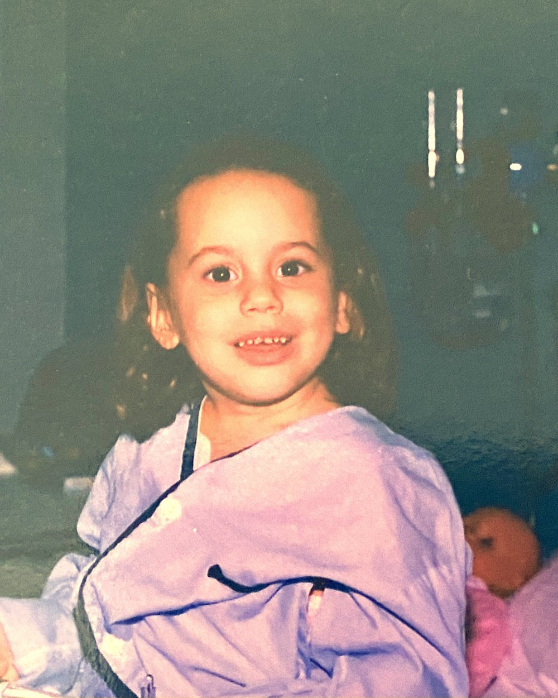
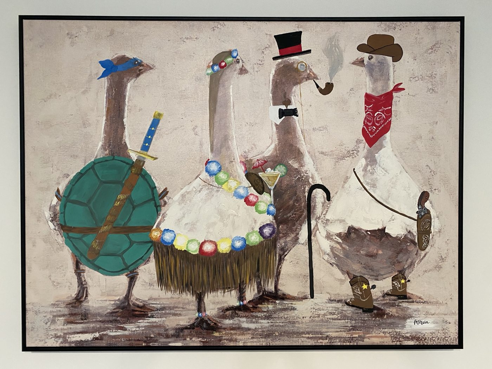
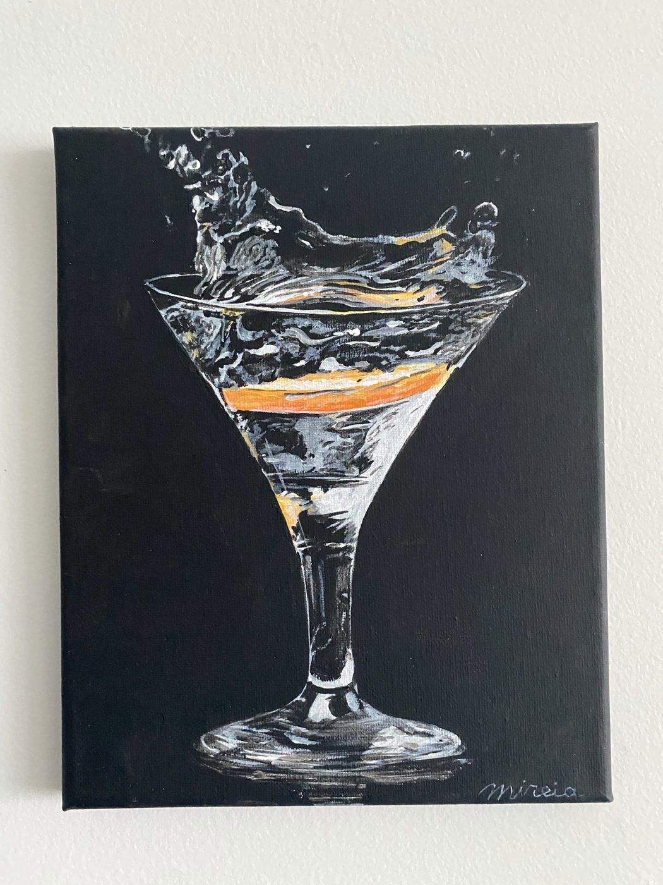
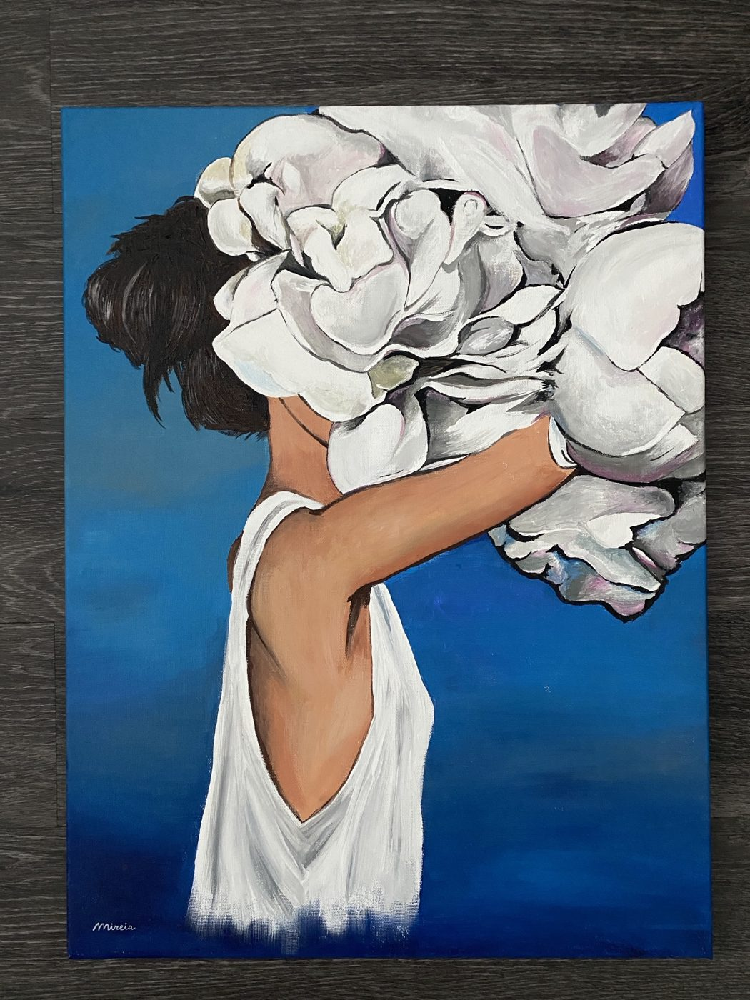
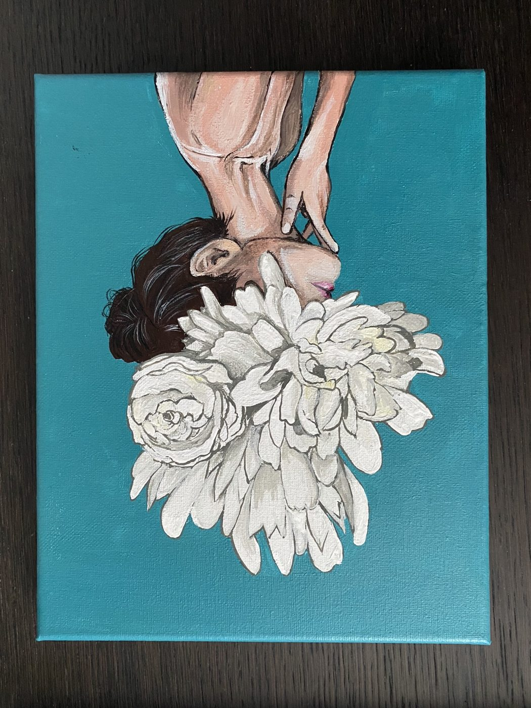
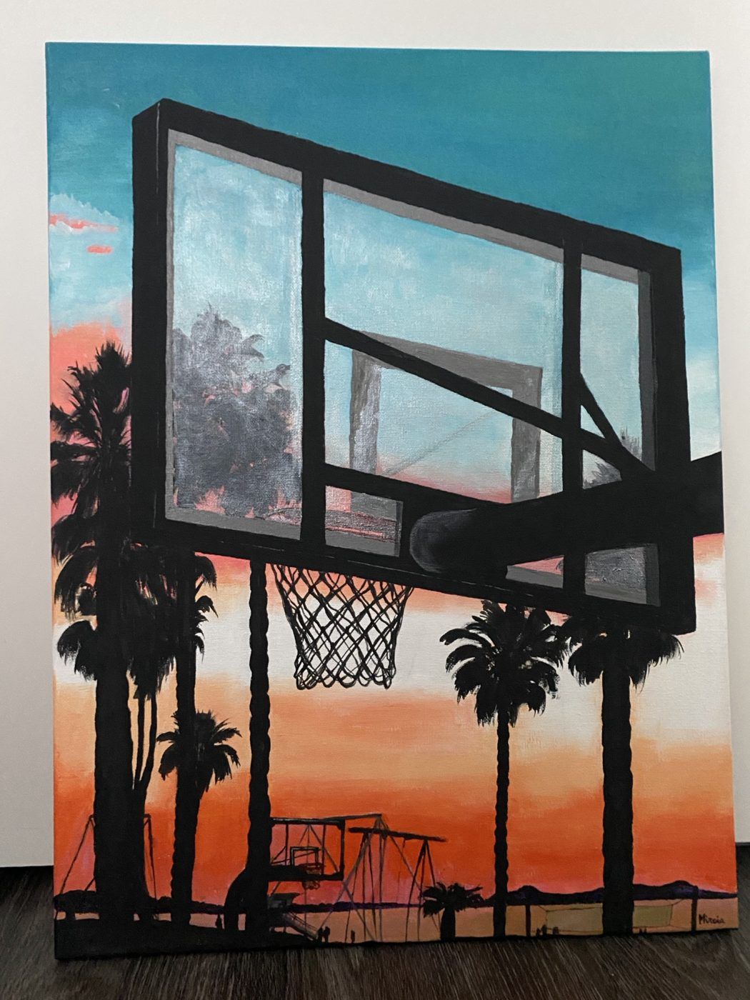
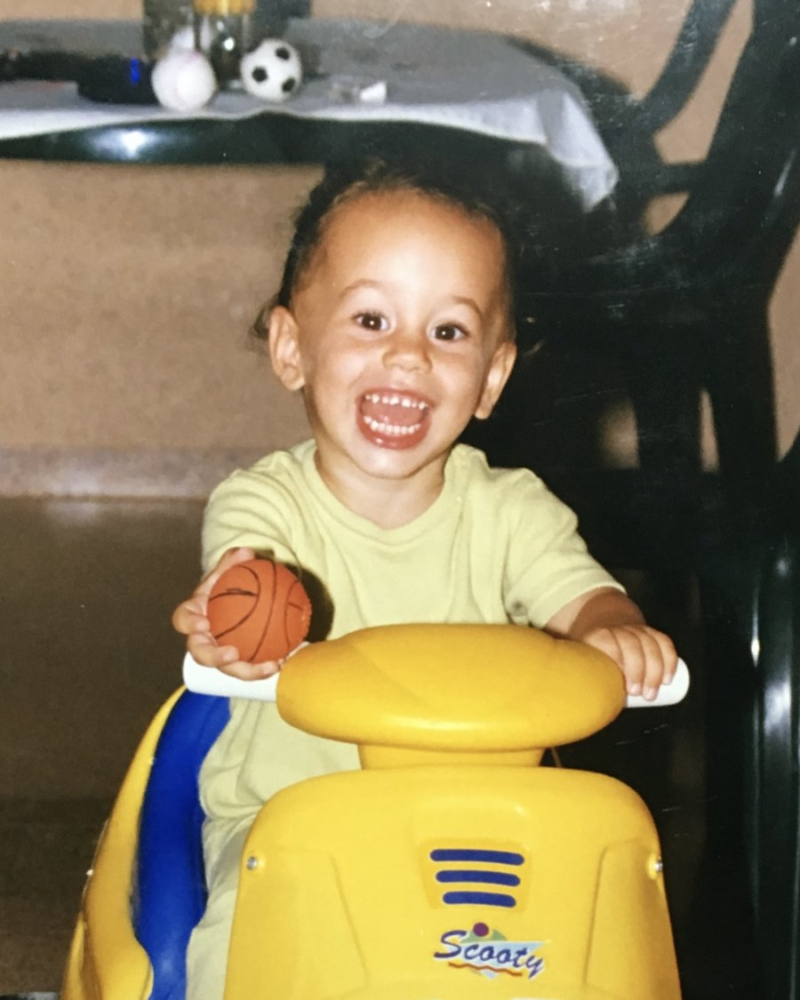

Boston, MA · Quantum · Photonics · Life science
When I was a kid I wanted to be a medical doctor, white coat included. Then I fell in love with numbers, and was drawn to a discipline that would combine both: biomedical engineering. I did my bachelor's in Spain, wrote an undergraduate thesis on deep learning for early diagnosis from medical images, and then spent about a year in Vienna learning about cardiac MRI.

I learned that Boston was the home of biotech and decided to pursue a PhD at Northeastern and become an MRI scientist. That is where, indirectly, I started building my foundation in quantum mechanics. An MRI is billions of nuclear spins brought into coherence, and then a careful characterization of how they relax.
I then joined Swabian Instruments, and have since been applying the physics I learned to a much wider world of applications: entangled photons, single-molecule fluorescence, and quantum experiments of every kind.
The full numbers are on my résumé. I find the stories are better in person.
Here is my (not so active) Google Scholar.
These days I love to stay involved with the science. I am always eager to discuss collaborations, whether with detector partners, academic groups, or internally at Swabian Instruments. Getting hands-on has always been my favourite way to learn.
I paint, nowadays in acrylic. Less than I would like to, bandwidth being what it is, but I love the process: choosing colours, laying down layers until you get the outcome you expected, or not. I love to create.





I grew up in a Catalan-speaking region of Spain, so Catalan and Spanish came free. English I worked at, and believed I was fluent in, until I moved to the US and was shown otherwise. Italian is my joy: I am ecstatic every time I get through a whole conversation without unconsciously slipping into "itañol". My latest project is German. Warum nicht?
Sports, preferably team sports, and outdoors whenever Boston permits it. I grew up playing basketball, though my height does not have much to show for it. Padel is my favourite racket sport, but New England is not known for its abundance of padel courts, so I have also been playing tennis, squash and pickleball. In winter I snowboard, and I am eager to learn to ski as well.

If you are building something that measures what nobody else can, want to argue about pipeline design, or have a strong opinion about whether the geese are overdressed, leave me your email and I will get back to you. Or find me on LinkedIn.